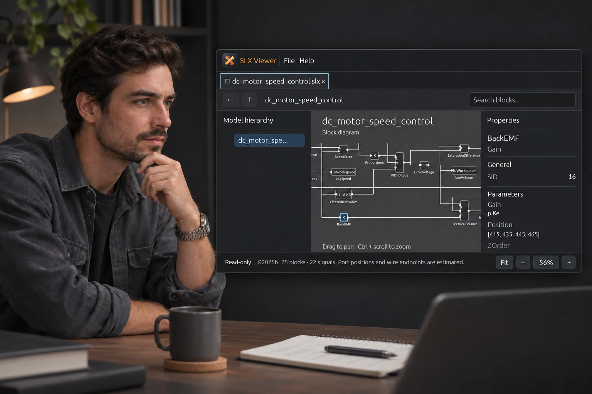

Diagrams and hierarchy
Pan and zoom saved diagrams, follow signal branches, and navigate through available subsystems.
Read-only desktop app
Open and inspect saved Simulink models on Windows.
Browse diagrams, follow signals, and read stored block properties offline. Open source under the MIT License.
Portable ZIP · No MATLAB or Simulink installation required

Pan and zoom saved diagrams, follow signal branches, and navigate through available subsystems.
Search by name or system path. Select a result to reveal the block and inspect its stored properties.
Open supported saved charts and inspect states, transitions, and stored text.
Open files from your filesystem and read saved values and expressions as text.
Coverage is fixture-based. Some specialized blocks, external references, and Stateflow constructs have limited support. Supported layouts and limits
slx_viewer_desktop.exe..slx file into the window.The ZIP also includes slx_viewer.exe for command-line model summaries.
Browse the Rust source, contribute a change, or report an issue. For bug reports, include the app version, Windows version, and a redistributable example when available.
The Windows desktop viewer runs offline without either application.
SLX Viewer provides read-only inspection of saved diagrams, signals, and properties.
See the supported layouts and limits and the fixture manifest.
The Windows app reads files from your local filesystem. The website provides information and download links.